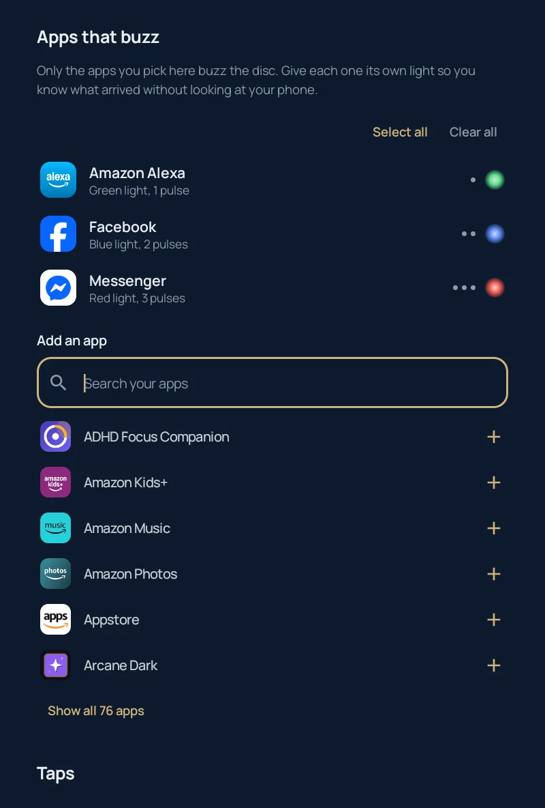
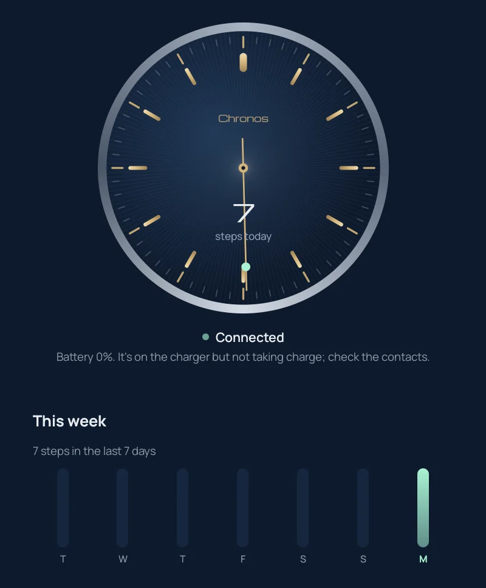
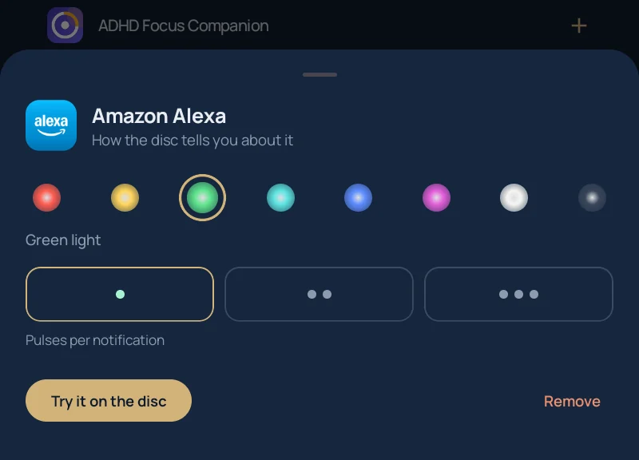

Your Chronos disc works again.
Chronos went out of business and took its app and servers with it. Chronos Revived is a free Android app that talks to the disc directly over Bluetooth, so your analog watch gets its buzzes, steps and taps back.
Android 8.0 or newer. No account, no cloud, no tracking.
Everything the disc could do, minus the dead servers
The app was rebuilt from the original Bluetooth protocol, so nothing depends on a company that no longer exists.

Know what arrived without looking
Pick the apps that should reach your wrist. Texts can glow green with one pulse, calls white with three, the group chat red. The disc lights up under your watch and vibrates, and your phone stays in your pocket.
Silent notifications never buzz, and incoming calls always get through.

A dial, not a dashboard
The home screen looks like the back of a good watch: a sunburst dial, brass indices, and a minute track that fills with lume as the battery charges. Today's steps sit in the middle and a seconds hand sweeps while the disc is connected.
Below it, a week of steps and a 24-hour battery history.

Taps that do things
Double tap the crown to play or pause music, triple tap to skip. Tap the watch face over and over and your phone rings, even on silent.
Each one can be switched off if you'd rather keep your wrist quiet.
Bring a dead disc back
Many discs left in a drawer end up stuck in their bootloader with no working firmware. The app spots this and reflashes them.
Install the app
Download the APK from the latest release and open it.
Wake the disc
Take it off the charger and shake it. It only advertises for a moment after it moves.
Pair
Tap Find my Chronos and accept the Bluetooth pairing request.
Reflash if needed
If the disc has no firmware, pick the original Chronos APK and the app installs firmware 0.7.48 from it.
Under the caseback
Everything was worked out from the last official app and its firmware, then checked against a real disc. The full write-up is in PROTOCOL.md.
- Chip
- Nordic nRF51 with the S110 Bluetooth stack
- Motion
- Kionix accelerometer for steps and taps
- Vibration
- TI DRV2605 haptic driver
- Service
beb81000-b1b1-5b9d-b4a0-c030b58bc170- Firmware
- 0.7.48 over Nordic legacy DFU
97 01 FF LED brightness 9C 00 current steps 9D 00 next history record B2 01 01 enable crown taps 91 11 61 01 … program the light 90 0A 40 01 31 82 … program the buzz 95 04 61 01 40 01 play it now
Questions
Is this the official Chronos app?
No. It's an independent, open-source project. It isn't affiliated with or endorsed by Chronos Wearables, which has shut down. "Chronos" is used only to say which device this works with.
Why do I need the original Chronos APK to reflash?
The firmware belongs to Chronos, so this project doesn't redistribute it. If your disc needs firmware, choose your copy of the original app's APK (com.wearchronos.chronos) and the app takes the firmware out of it on your phone.
My disc says it's on the charger but the battery stays at 0%.
The disc's charger chip works on its own, so no app can force it to charge. Clean the contacts on the disc and the cradle and leave it overnight; the battery chart shows whether the level climbs. If it never does, the cell is likely worn out and needs replacing.
Does it work on iPhone?
Not yet. This release is Android only.
Does it send my data anywhere?
No. There's no account and no server. Notifications are read on your phone only to decide whether to buzz, and nothing leaves the device.